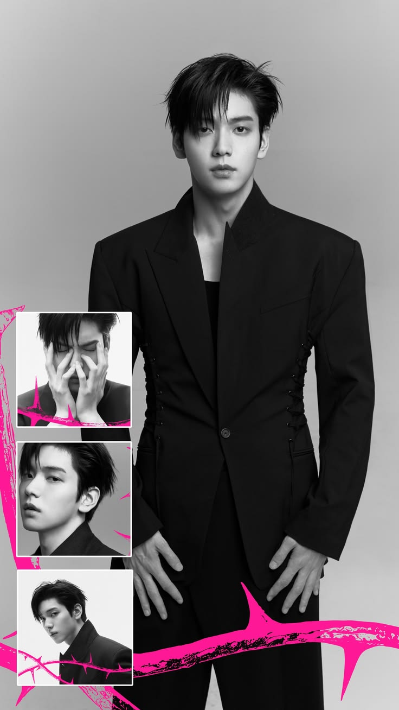

Soobin
Leader — Vocal
Calme / soft vibe
2019 - maintenant

Biographie
Soobin est le leader du groupe et est connu pour sa voix douce et apaisante. Il a un charisme naturel et est très apprécié par les fans pour sa personnalité chaleureuse.
Ajout de maintenant à ses débuts avec les photoshoots
Soobin lors de l'EP "7TH YEAR: A Moment of Stillness in the Thorns" en 2026

Soobin lors de l'EP "The Dream Chapter : STAR" en 2019